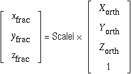
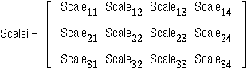
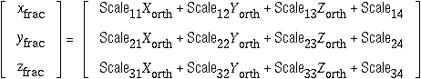
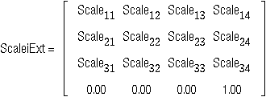
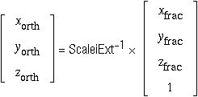

CCP4 uses a subset of the PDB format for holding information on atomic coordinates and other model information. The full format description can be found at the wwPDB site.
CCP4 programs also use the PDB format for holding other information, such as lists of peaks in maps, Patterson vectors, etc.
Authors of this document: John W. Campbell, Adam C. Ralph and Martyn Winn.
XO // a YO // c* × a ZO // c*Within a PDB format file, however, coordinates may be held with respect to other sets of axes. If files are in a non-standard axis setting then the CRYST1 or SCALE cards must be present. A complete description of the file format is available from the wwPDB but some selected features, relevant to the handling of the coordinate data are described below. In general terms it may be noted that the format is basically a card image format with fixed length 80 byte records.
Cols. 1-6 Record name "ATOM " or "HETATM"
7-11 Atom serial number (see note i)
13-14 Chemical symbol (right justified) )
15 Remoteness indicator ) (see note ii)
16 Branch designator )
17 Alternate location indicator (see note iii)
18-20 Residue name (see note iv)
21 Reserved )
22 Chain identifier )
) (see note v)
23-26 Residue sequence number )
27 Code for inserting residue )
31-38 X )
39-46 Y ) Orthogonal Angstrom coordinates
47-54 Z )
55-60 Occupancy
61-66 Isotropic B-factor
73-76 Segment identifier, left justified (used by XPLOR)
77-78 Element symbol, right justified )
) (see note vi)
79-80 Charge on atom )
Typical format:
(6A1,I5,1X,A4,A1,A3,1X,A1,I4,A1,3X,3F8.3,2F6.2,6X,2A4)
Notes:
Cols. 21 Reserved for future expansion
22 Chain identifier, e.g. A for Haemoglobin
alpha chain
23-26 Residue sequence number
27 Code for insertions of residues,
e.g. 66A, 66B etc.
Cols. 1-3 Record name "TER"
7-11 Serial number
18-20 Residue name
21-27 Sequence identifier (see description of 'ATOM'
cards above)
Typical format: (6A1,I5,6X,A3,1X,A1,I4,A1)
Cols. 1-6 Record name "CRYST1"
7-15 a (Å)
16-24 b (Å)
25-33 c (Å)
34-40 alpha (°)
41-47 beta (°)
48-54 gamma (°)
56-66 Space group symbol, left justified (not used)
67-70 Z (not used)
Typical Format: (6A1,3F9.3,3F7.2,1X,11A1,I4)
Cols. 1-6 SCALE1 SCALE2 SCALE3
11-20 S11 S21 S31
21-30 S12 S22 S32
31-40 S13 S23 S33
46-55 U1 U2 U3
Typical Format: (6A1,4X,3F10.6,5X,F10.5)
To remind you:
If you have a PDB file
 ,
where
 ,
the matrix at the head of a PDB file, i.e.
 .
Therefore, extending Scalei to ScaleiExt so that the 4×4 inverse matrix can be generatedfootnote ¶
 ,
 .
The programs COORDCONV, VECTORS and HAVECS will all convert (various formats of) fractional coordinates to orthogonal ones. HAVECS's PHARE input type corresponds to MLPHARE's output coordinate format.
Footnote ¶: The extension line ([ 0.00 0.00 0.00 1.00]) is necessary to cope with [Scale14,Scale24,Scale34], the translation component of the transformation.
Cols: 1-6 Record name "ANISOU"
7-11 Atom serial number.
13-16 Atom name
17 Alternate location indicator.
18-20 Residue name
22 Chain identifier.
23-26 Residue sequence number.
27 Insertion code.
29-35 U(1,1)
36-42 U(2,2)
43-49 U(3,3)
50-56 U(1,2)
57-63 U(1,3)
64-70 U(2,3)
73-76 Segment identifier, left-justified.
77-78 Element symbol, right-justified.
79-80 Charge on the atom.
The isotropic temperature factor defined in the ATOM card is defined as:
Biso = 8pi² × (U(1,1) + U(2,2) + U(3,3))/3
| Residue | Abb. | Residue | Abb. |
| Acidic unknown | ACD | Homoserine | HSE |
| Acetyl | ACE | Hydroxyproline | HYP |
| Alanine | ALA | Hydroxylysine | HYL |
| beta-Alanine | ALB | Isoleucine | ILE |
| Aliphatic unknown | ALI | Leucine | LEU |
| gamma-Aminobutyric acid | ABU | Lysine | LYS |
| Arginine | ARG | Methionine | MET |
| Aromatic unknown | ARO | Ornithine | ORN |
| Asparagine | ASN | Phenylalanine | PHE |
| Aspartic acid | ASP | Proline | PRO |
| ASP/ASN ambiguous | ASX | Pyrollidone carboxylic acid | PCA |
| Basic unknown | BAS | Sarcosine | SAR |
| Betaine | BET | Serine | SER |
| Cysteine | CYS | Taurine | TAU |
| Cystine | CYS | Terminator | TER |
| Formyl | FOR | Threonine | THR |
| Glutamic acid | GLU | Thyroxine | THY |
| Glutamine | GLN | Tryptophan | TRP |
| GLU/GLN ambiguous | GLX | Tyrosine | TYR |
| Glycine | GLY | Unknown | UNK |
| Heterogen | HET | Valine | VAL |
| Histidine | HIS | Water | HOH |
alpha - A beta - B gamma - G delta - D epsilon - E zeta - Z eta - H
Atoms for which some ambiguity exists in the crystallographic results are designated A. This will usually apply only to the terminal atoms of asparagine and glutamine and to the ring atoms of histidine.
The extra oxygen of the carboxyl terminal amino acid is designated OXT.
Four characters are reserved for the atom names as follows:
1-2 Chemical symbol - right justified 3 Remoteness indicator (alphabetic) 4 Branch designator (numeric)This does not have to be adhered to strictly because the chemical symbol (element name) is defined in columns 77-78. This definition will be taken in preference.